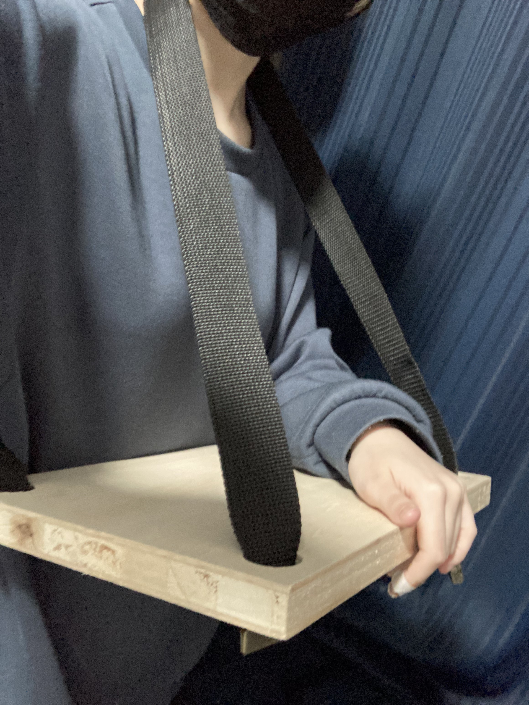
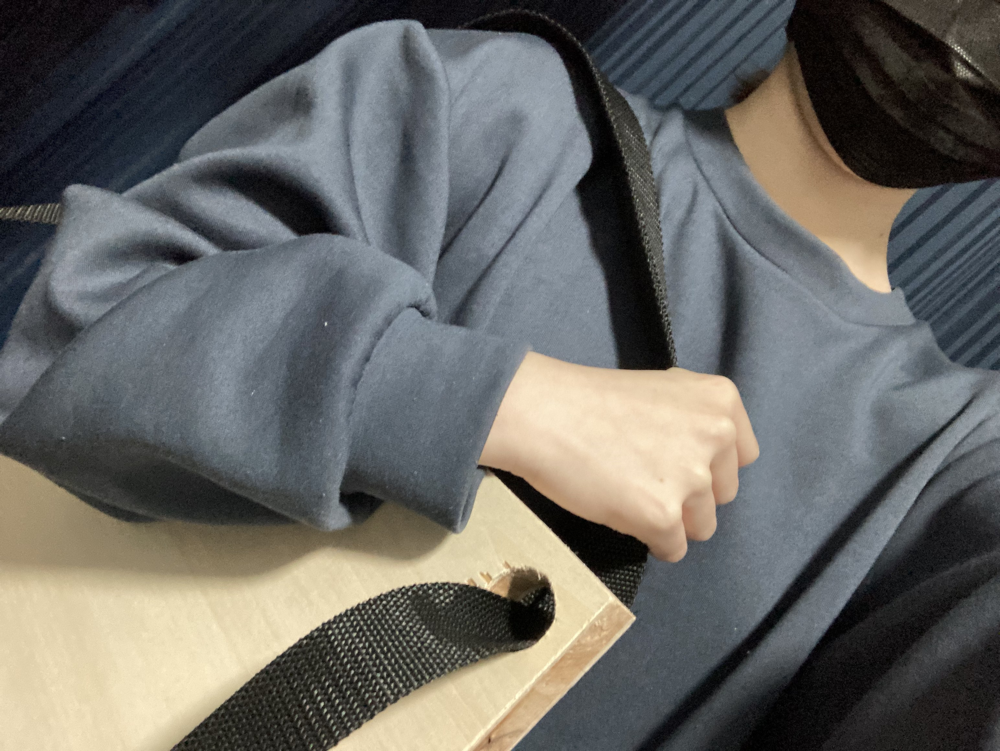

持ち運び机
私たちの班では「持ち運びできる机」を作ることになった。プロトタイプ
首に下げて使えるものを想像して作った。スケッチはこんな感じ↓
大きめの板が必要だったのでショップボットのCNCを使うことに。先生にやってもらいました。

↑板の厚さを測っている
fusion360で書いてdxfデータにしたもので作る。
インサイド、アウトサイド
ドリルの太さと寸法の問題があるので、線分に対して内側を辿るか外側を辿るかでより正確な寸法にしていく。
たとえばあなをあける時に、アウトサイドにしてしまうとドリルの太さ分あなの直径が広がってしまうことになる。
タブ

これはタブと呼ばれる残すところを指定する作業らしい。
今回の場合丸をくり抜くためには丸を全て切ってはいけないことになる。理由は、全て切ると部品が飛んできたりして危なかったり、完全に切れてしまったことで部品がずれるとバグが起きてしまうため。一部を浅く薄く残しておくことで大元の板と繋げておく。
厚さも気を付ける。切る深さの設定を板の厚さと同じかより厚く設定する。（カットする板の下に切れてもいい板を挟んである。
ということで切ります。切る時は念の為ゴーグルをかけて透明のビニールカーテンを閉める。
終わったものがこちら。
シンプルな平面だったから問題なかったけど、組み合わせる部品とかだともうちょっといろいろ考えなければいけないことが出てくるらしい。
（ドリルの形が丸なのでなのでどうしても角がかくばらなかったり）
ぱっと見わからないけど深いところに薄くさっきのタブがついているので取り除く作業。（先生がやってくださった）
おわったらちゃんと掃除して、きた時より綺麗に！とのことなので掃除。写真撮ったのに保存を忘れていた。
やすりがけします。
失敗しました。
ひっくり返して誤魔化すので問題ありません
専用のやすりじゃなかったのでなんとなくだけど面取りみたいなこともして
百均でそれっぽいベルトを買ったので通す

完成！
２本とも首に通すとちょっと長さが足りないうえに首がきついかなと思い、１本は腰ベルトに
したから見た図。ベルトの金具がいいかんじにつっかえて安定してる。ちゃんとした紐あればもっとよかったけど。
ベルトを腰でとめてる。

一応肩掛けできるので持ち歩き、、、できます
感想、反省点
- 最初考えていたのとはだいぶ違うものになった（当たり前だけど）
- たまたま先生にやってもらえたけど自分だと多分できなかった
- 見た目がちょっとださい（心が動くとかがない？）